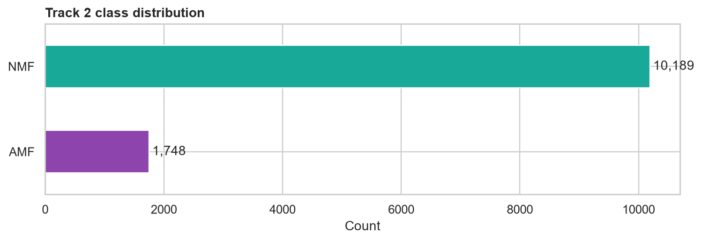
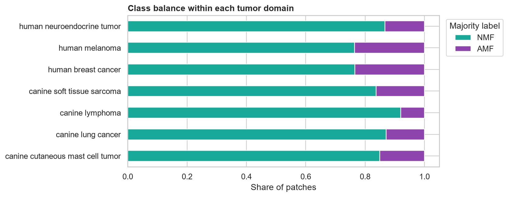
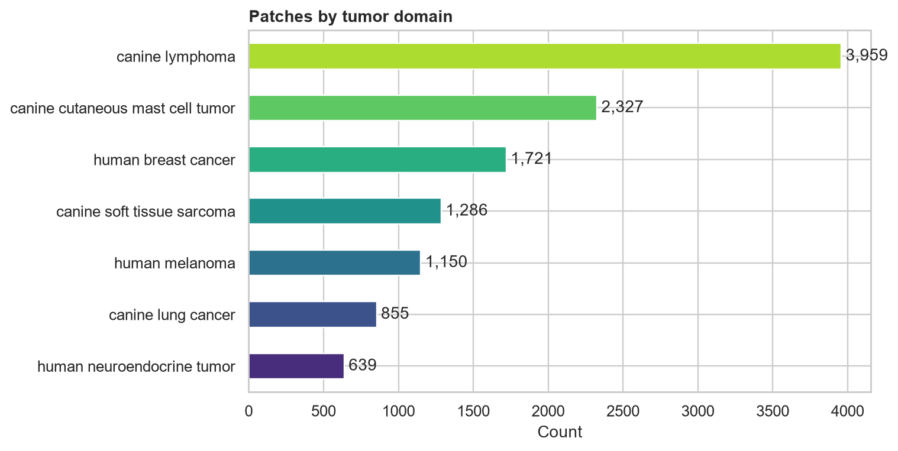
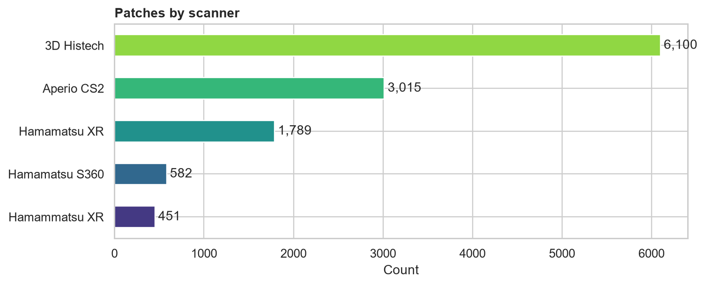
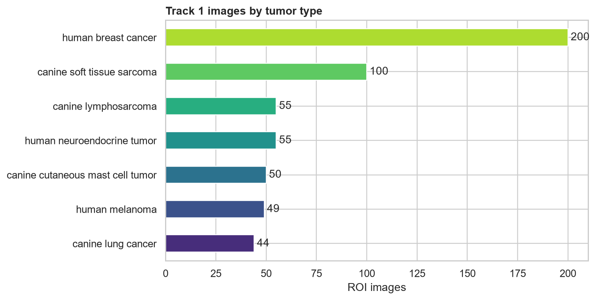
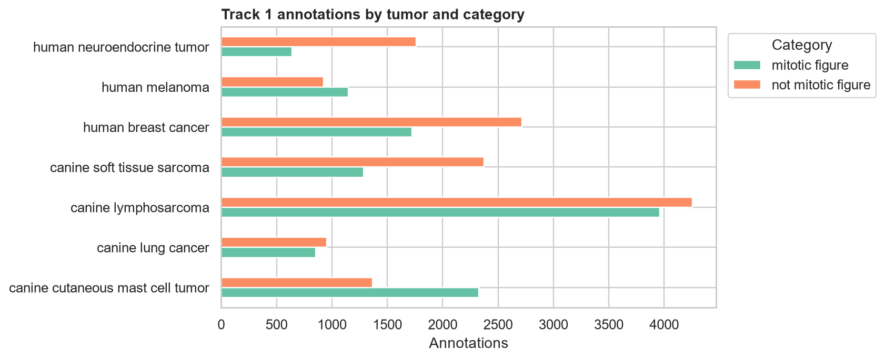

Training data audit
Generated 2026-11-08T16:41:11.090803+00:00. Full-image statistics reflect files present locally at audit time.
Priority findings
| severity | scope | finding | metric | recommendation |
|---|---|---|---|---|
| critical | Cross-track leakage | Track 2 patches are derived from Track 1 mitosis coordinates. | 11,594/11,937 unique Track 2 coordinates match Track 1 | Use one shared WSI-level split manifest across both tracks; never split tracks independently. |
| high | Model validation | Patches from the same source WSI are strongly correlated. | 475 source WSIs for 11,937 rows | Split by source filename (and preferably domain), never randomly by patch. |
| high | Track 1 annotations | Some detection boxes fail geometry or boundary validation. | out_of_bounds: 274 | Clip boxes to ROI bounds (or exclude after review) before patch extraction and training. |
| high | Track 2 labels | Published majority disagrees with a strict majority of available expert votes. | 49 rows | Review these rows and retain published labels only with documented adjudication. |
| medium | Track 2 domains | A scanner name typo creates a false extra domain. | Hamammatsu XR: 451 rows | Normalize `Hamammatsu XR` to `Hamamatsu XR` in a derived metadata column. |
| medium | Track 2 labels | The binary target is substantially imbalanced. | NMF:AMF = 5.83:1 (10,189 vs 1,748) | Report balanced accuracy/AUROC and use class-aware sampling or loss weighting. |
| info | Track 1 manifest | The COCO metadata references more TIFF names than the official downloader publishes. | 553 metadata names; 503 downloadable TIFFs; 50 metadata-only names | Treat the official 503-TIFF manifest as the downloadable training corpus and retain this distinction in provenance. |
Track 2: atypical classification
The archive contains 11,937 PNG files while the CSV contains 11,937 rows and 11,937 unique image IDs. The source grouping column identifies 475 WSIs. Use that field as the minimum split unit.
Class distribution
| label | count |
|---|---|
| NMF | 10189 |
| AMF | 1748 |
Domain distribution
| tumor | patches |
|---|---|
| canine lymphoma | 3959 |
| canine cutaneous mast cell tumor | 2327 |
| human breast cancer | 1721 |
| canine soft tissue sarcoma | 1286 |
| human melanoma | 1150 |
| canine lung cancer | 855 |
| human neuroendocrine tumor | 639 |
Expert agreement
| pair | shared rows | agreement | Cohen kappa |
|---|---|---|---|
| expert1 vs expert2 | 11937 | 0.882 | 0.572 |
| expert1 vs expert3 | 4810 | 0.836 | 0.439 |
| expert2 vs expert3 | 4810 | 0.776 | 0.444 |
Track 1: mitosis detection
The COCO-style metadata contains 553 ROI images and 26,286
annotations across 7 tumor domains. Its bbox values are corner coordinates
[x0,y0,x1,y1], not standard COCO [x,y,width,height]; treating them as standard COCO silently
corrupts box sizes and centers.
Local TIFF status at audit time: 503/503 non-empty files, 0 zero-byte files.
Cross-track relationship
11,594 of 11,937 unique Track 2 source coordinates match Track 1 mitotic annotations. This is expected dataset derivation, but it creates severe leakage if the tracks are split independently. Maintain one WSI-level split manifest for both tasks.
Visual audit






Artifacts and methodology
The report folder also contains machine-readable audit_summary.json, issue records,
per-image inventories, and duplicate-ID rows. Patch checks include full-file SHA-256, decode integrity, dimensions,
mode, downsampled RGB/tissue statistics, and average-hash collisions. Track 1 metadata checks include referential
integrity, category validity, box geometry/bounds, annotation vote coverage, domain counts, and cross-track coordinate matching.
Average-hash collisions are candidates, not proof of duplication. TIFF pixel statistics are deferred until the 65 GB image download completes; rerunning the command refreshes this report from the current local state.